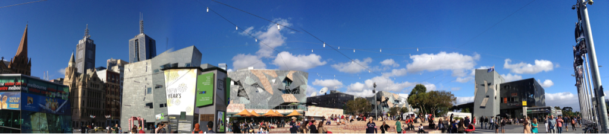

Tue, 27 Dec 2011 11:41:12 · aussiechristmas
aussie christmas means spending lazy afternoon

Aussie Christmas means spending lazy afternoon picnic and lazying under clear summer days…
Tue, 27 Dec 2011 11:41:12 · aussiechristmas

Aussie Christmas means spending lazy afternoon picnic and lazying under clear summer days…